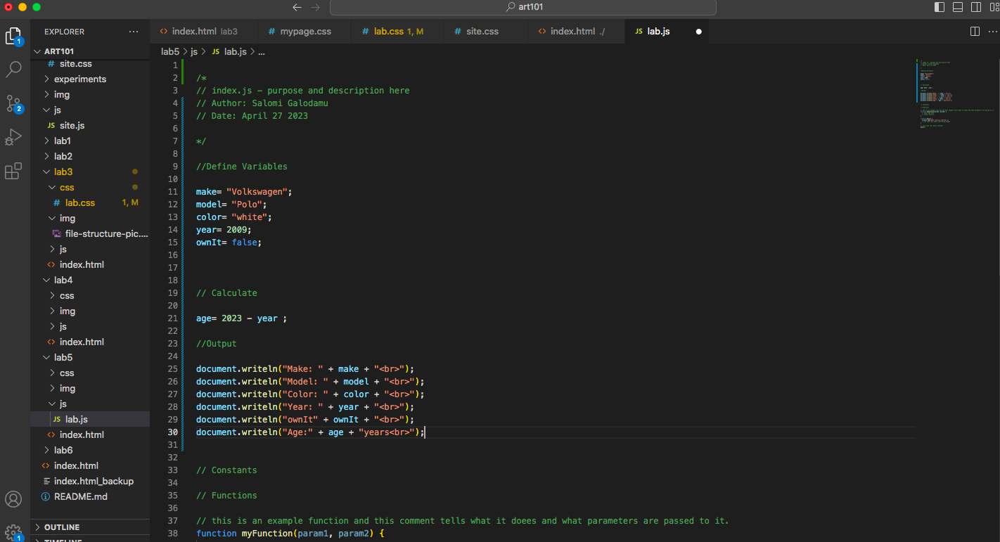

Lab 5 - Data Types and Variables
Challenge
The challenge of this lab was to work with javascript data types and variables. We were assigned to create a console contents, create a javascript program in the lab 5 folder, while also linking index.html and CSS.
Problems
Some problems that arose included having to clear jawscript console due to making a mistake and having to clear out from the console and begin again. This occured numerous times, but I was able get a hang of it after a few tries. I also had an issue with minimizing an image onto the Results section but managed to get by through experimentation on CSS file attached.
Reflection
This assignment was a nice way to put in practice for using Javascript and honing in my skills on CSS and having a smoother process of uploading my file onto Github.
Results
I was able to include my Script Output onto my result.
